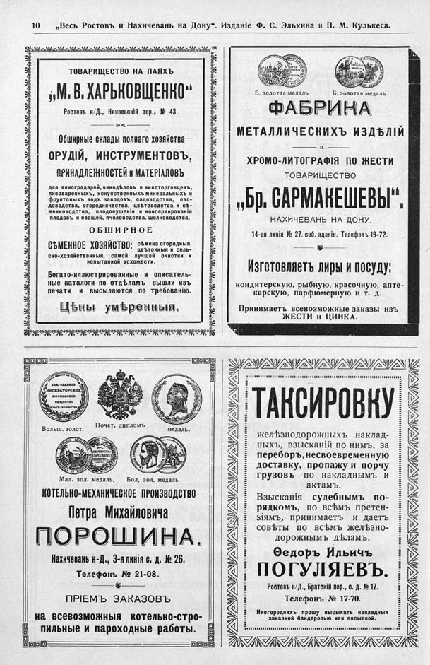

Лист источника 592
Скан

Распознанный текст
10 „Весь Ростовъ и Нахичеванъ на Дону“. Изданіе Ф. С. Элькина и П. М. Кулькеса.
ТОВАРИЩЕСТВО НА ПАЯХЪ
„М. В. ХАРЬКОВЩЕНКО“
Ростовъ н/Д., Никольскій пер., № 43.
Обширные склады полнаго хозяйства
ОРУДІЙ, ИНСТРУМЕНТОВЪ,
ПРИНАДЛЕЖНОСТЕЙ И МАТЕРІАЛОВЪ
для виноградарей, винодѣловъ и виноторговцевъ,
пивоваренныхъ, искусственныхъ минеральныхъ и
фруктовыхъ водъ заводовъ, садоводства, пло-
доводства, огородничества, цвѣтоводства и сѣ-
менноводства, плодосушенія и консервированія
плодовъ и овощей, пчеловодства, шелководства.
О Б Ш И Р Н О Е
СѢМЕННОЕ ХОЗЯЙСТВО; сѣмена огородныя,
цвѣточныя и сель-
ско-хозяйственныя, самой лучшей очистки и
испытанной всхожести.
Богато-иллюстрированные и описатель-
ные каталоги по отдѣламъ вышли изъ
печати и высылаются по требованію.
Цѣны умѣренныя.
Б. золотая медаль Б. золотая медаль
ФАБРИКА
МЕТАЛЛИЧЕСКИХЪ ИЗДѢЛІЙ
и
ХРОМО-ЛИТОГРАФІЯ ПО ЖЕСТИ
ТОВАРИЩЕСТВО
„Бр. САРМАКЕШЕВЫ“.
НАХИЧЕВАНЬ НА ДОНУ.
14-ая линія № 27. соб. зданіе. Телефонъ 19-72.
Изготовляетъ лиры и посуду:
кондитерскую, рыбную, красочную, апте-
карскую, парфюмерную и т. д.
Принимаетъ всевозможные заказы изъ
ЖЕСТИ и ЦИНКА.
Больш. золот. Почет. дипломъ медаль.
Мал. зол. медаль. Бол. зол. медаль
КОТЕЛЬНО-МЕХАНИЧЕСКОЕ ПРОИЗВОДСТВО
Петра Михайловича
ПОРОШИНА.
Нахичеванъ н-Д., 3-я линія с. д. № 26.
Телефонъ № 21-08.
ПРІЕМЪ ЗАКАЗОВЪ
на всевозможныя котельно-стро-
пильные и пароходные работы.
ТАКСИРОВКУ
желѣзнодорожныхъ наклад-
ныхъ, взысканій по нимъ, за
переборъ, несвоевременную
доставку, пропажу и порчу
грузовъ по накладнымъ и
актамъ.
Взысканія судебнымъ по-
рядкомъ, по всѣмъ претен-
зіямъ, принимаетъ и даетъ
совѣты по всѣмъ желѣзно-
дорожнымъ дѣламъ.
Ѳедоръ Ильичъ
ПОГУЛЯЕВЪ.
Ростовъ н/Д., Братскій пер., с. д. № 17.
Телефонъ № 17-70.
Иногороднихъ прошу высылать накладныя
заказной бандеролью или посылкой.